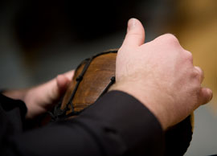

Our Music
|
Since the beginning, The Yellow Door Choir has always been unique among choirs for its eclecticism, each performance being a cornucopia of musical styles, cultures, and languages. To this day, the choir continues to evolve while remaining dedicated to the performance of world music in many languages. Songs have been commissioned especially for the choir, and many of its international folk selections have been arranged by well-known composers in their countries of origin. The choir’s cumulative repertoire now spans 12 centuries and at least 19 languages. |
 |
Small ensembles of choir members add a charming contrast to the full choir at concerts. The participation of the Chad Linsley Jazz Trio, Sweatshop Tango Ensemble, and others in our concerts have introduced variety and novelty. Pianist-accompanists Erica Smith, Lynette Wahlstrom, Amy Zanrosso, and Geneviève Jalbert have been tremendously valuable assets.